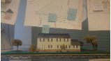
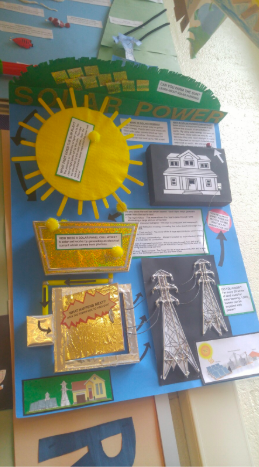

TSA with STEM Technology
Students in the IB Design Technology class at the Academy research about different types of houses and buildings in which one can live. They choose a building that they want to create and draft many drawings of the building in the Engineering Design Process. They analyze the Design Opportunity and are assigned a target audience for them to keep in mind. Students sketch, measure, cut, and build the model during the course of two marking periods in their junior year. They meet with real estate agents and call companies that could help them in their journey. The students research the different materials and create a bottom, top, and side views of their model. They scale the drawing with a ratio, such as 1 inch: 10 feet. Students have built many exotic and futuristic houses over the years, and you can make one too!

TSA with STEM Engineering
Students in 9th Grade Engineering learn about the fundamentals of engineering. They analyze the engineering process and create an interactive poster for a museum. The top 5 posters (this was 1st) get to exhibit their product in the Please Touch Museum in Philadelphia, PA. Students read case studies about the museum to see who their target audience is, and generate a design problem that is suited for their museum. They look at graphs and diagrams of the financial aspects to understand the costs and limits of the posters. They research about size, quantity, aesthetics, product constraints, target market, and function of the product/company. Students also build prototypes and learn about tools in the woods lab.
Copyright © 2019 https://flyingtoucans.github.io